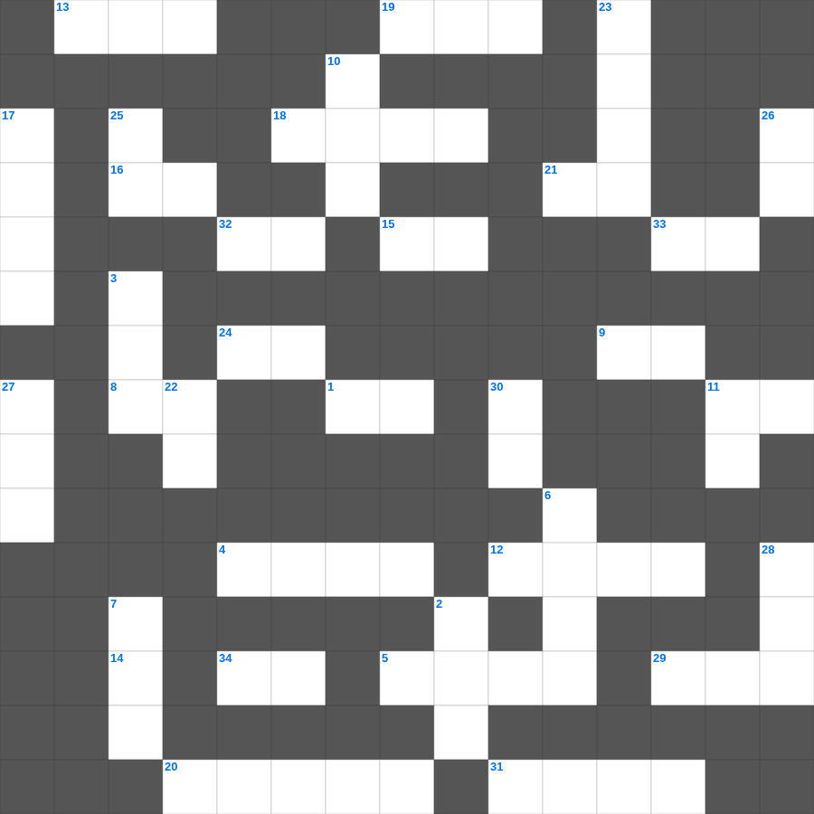

성경 난센스 퀴즈 (1)
📌 서비스 정의
십자가로세로는 교회 주보와 주일학교에서 사용할 수 있는 성경 기반 가로세로 퍼즐 서비스입니다. 성경 인물, 사건, 핵심 구절을 바탕으로 제작되었습니다. 온라인 풀이 및 인쇄 기능을 제공합니다.
무료로 즐기는 성경 성경 낱말 퍼즐! 35개의 힌트로 구성된 가로세로 낱말 퍼즐입니다. PC와 모바일 모두 지원되며, 정답을 바로 확인할 수 있어 혼자서도 쉽게 풀 수 있습니다.

📝 가로 힌트
1. 반석 위에 지은 집과 이것 위에 지은 집
4. 하나님이 우리와 함께 계시다
5. 거짓 이것들이 일어나 많은 사람을 미혹함
8. 여호와는 나의 이것이시니 내게 부족함이 없으리로다
9. 극히 값진 이것 하나
11. 십자가의 도가 멸망하는 자들에게는 미련한 것이요 구원을 받는 우리에게는 하나님의 이것이라
12. 아브라함이 이삭을 번제로 드리려 한 산
13. 예수님이 십자가에 못 박히신 곳
14. 세상 죄를 지고 가는 하나님의 어린 이것
15. 수고하고 무거운 짐진 자들아 다 내게로 오라 내가 너희를 이것케 하리라
16. 세상에서 가장 먼저 난 사람은?
18. 포기하지 아니하면 때가 이르매 이것으리라
19. 예수님이 광야에서 금식하신 일수
20. 야곱이 형의 낯을 피해 도망가다 꿈을 꿈
21. 기쁜 소식, 즉 예수 그리스도의 이야기
24. 오직 의인은 이것으로 말미암아 살리라
29. 근신하라 이것하라 너희 대적 마귀가 우는 사자 같이 두루 다니며 삼킬 자를 찾나니
31. 하나님이 만드신 최초의 낙원
32. 만물의 마지막이 가까이 왔으니 그러므로 너희는 정신을 차리고 근신하여 이것하라
33. 하나님을 경외하는 것이 이것의 근본
📝 세로 힌트
2. 성경 인물 중 가장 키가 큰 사람은?
3. 솔로몬 성전 건축에 쓰인 고급 나무
6. 살아계신 하나님의 아들
7. 예수님의 머리카락이 이것 같다고 묘사됨(계시록)
10. 대제사장의 흉패에 박힌 보석 개수
11. 할 수 있거든이 무슨 말이냐 믿는 자에게는 이것치 못할 일이 없느니라
17. 바울이 감옥에서 쓴 서신들
22. 영접하는 자 곧 그 이름을 믿는 자들에게는 하나님의 이것이 되는 권세
23. 빌라도가 군중의 요구에 예수님을 넘겨주고 한 행동
25. 눈물을 그 눈에서 이것해 주시리니
26. 보라 이전 것은 지나갔으니 보라 이것이 되었도다
27. 성막 가장 안쪽, 하나님의 임재 상징
28. 좁은 문으로 들어가기를 이것하라
30. 진리가 너희를 이것케 하리라
📖 함께 읽으면 좋은 성경사전
퍼즐을 풀기 전에 읽으면 힌트가 쉬워지고, 풀고 나서 읽으면 내용을 한 번 더 복습할 수 있습니다.
🧩 이 퍼즐에서 배우는 내용
이 퍼즐은 성경 난센스 퀴즈 (1)의 핵심 단어와 개념을 자연스럽게 복습할 수 있도록 구성되었습니다. 주일학교 수업이나 개인 성경공부에서 학습 내용을 점검하는 용도로 바로 활용할 수 있습니다.
🧑🏫 교회 교육 자료 활용
이 퍼즐은 주일학교 교재 추천 자료로 활용할 수 있고, 주일학교 주보에 넣기 좋은 분량으로 구성되어 있습니다. 수업용 주일학교 교안에 활동지로 붙이거나, 예배 후 복습용 주일학교 공과교재로 바로 사용할 수 있습니다.
🏷️ 키워드
성경 낱말 퍼즐, 성경, 십자가로세로, 성경퀴즈, 말씀퀴즈, 가로세로퍼즐, 주일학교 교재 추천, 주일학교 주보, 주일학교 교안, 주일학교 공과교재